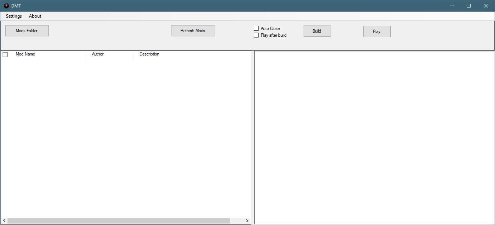

Introduction
The 7D2D Mod launcher provides an effortless way to play your favourite mods for 7 Days to Die, while keeping them updated automatically for you. It also provides an easy way to explore and finds new mods.
Installation:
The 7D2D Mod Launcher is available in a Microsoft One Click Installation package: https://7d2dmodlauncher.github.io/Installer/publish/
Features:
- Discover and install new mods easily and quickly
- Keeps your mod installations separate; avoid potential conflicts with over hauls
- Automatically updates itself to the latest version
- Automatically updates the mods each time you play, while also giving you the option to keep playing on your existing version
- Allows you to customize even overhauls, using the integrated Modlet Management Tool

Created with the Personal Edition of HelpNDoc: Write eBooks for the Kindle